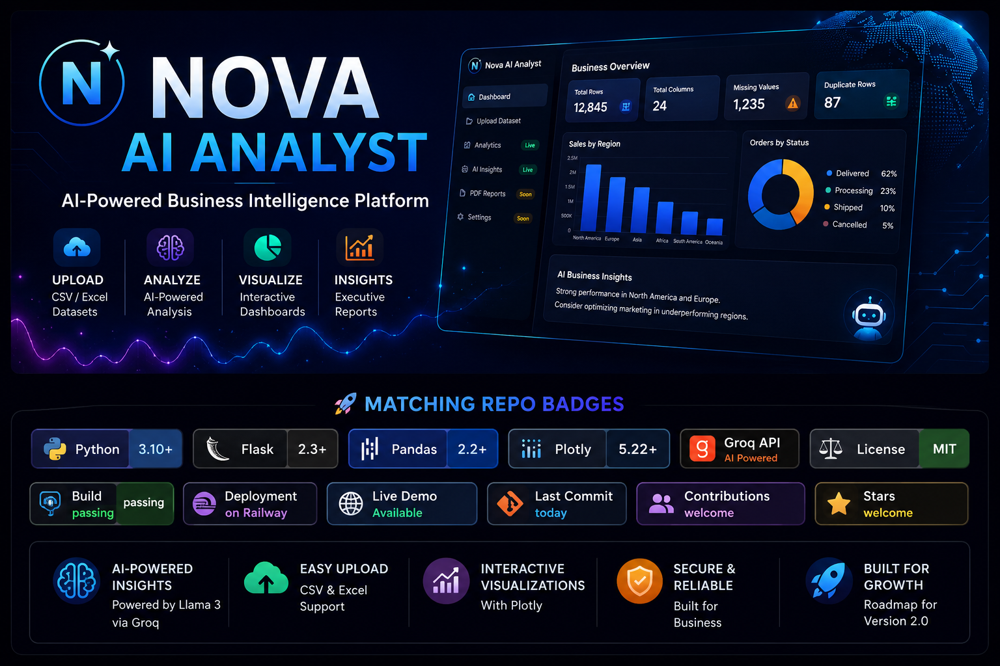
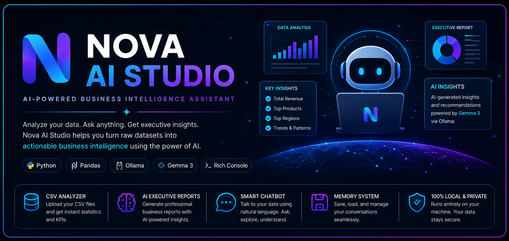

Projects built
Available for AI, data and BI opportunities
Hello, I’m
Edet “Alphaa” Simon
AI & Business Intelligence Developer
I build intelligent applications, automated analytics workflows and interactive dashboards that transform raw data into practical business decisions.
AI Products
LLMs · Groq · Ollama
Data & BI
SQL · Power BI · Pandas
def build_solution(data):
insights = analyze(data)
return business_value(insights)
Years in analytics
Tools & technologies
Deployed AI products
About me
Where technology meets business value.
I am a Computer Science graduate and technical data professional based in Abuja, Nigeria. My work combines data analytics, business intelligence, Python development and AI integration.
I enjoy taking an idea from raw requirements to a working product—cleaning data, designing dashboards, building backend logic, integrating APIs and deploying applications people can actually use.
My current focus is developing AI-powered analytical tools that make executive reporting and business insight generation faster and more accessible.
AI Engineering
LLM integration, prompt workflows and intelligent product development.
Business Intelligence
Interactive dashboards, KPI reporting and decision-support solutions.
Python Development
Backend systems, desktop tools, automation and data applications.
Capabilities
A practical technology stack.
Artificial Intelligence
Data & Business Intelligence
Python Development
Web & Product Tools
Selected work
Products and analytics projects.
A selection of AI applications, Python software and business intelligence work.

Flagship project · Live
Nova AI Analyst Web
A deployed AI-powered business intelligence platform that accepts CSV and Excel files, profiles datasets, generates executive insights with Groq, and creates interactive Plotly visualizations.

AI · Telegram
Nova AI Analyst Bot
Telegram business intelligence assistant for CSV analysis, automated KPI detection, AI executive reports and professional PDF exports.
View Repository →
AI · Local application
Nova AI Studio
A modular local AI assistant combining conversational intelligence, persistent memory, CSV analytics and executive business reporting.
View Repository →Python Weather App
Desktop weather application with real-time OpenWeatherMap data and a graphical interface.
Repository ↗Currency Converter
Modern desktop currency converter using live ExchangeRate-API rates and conversion history.
Repository ↗Contact Management System
Contact CRUD, search, category organization, JSON storage and CSV import/export.
Repository ↗Library Management System
Backend-focused book management application featuring CRUD operations and persistent storage.
Repository ↗Railway Tickets BI Dashboard
SQL Server and Power BI analysis of journeys, revenue, routes, station performance and delays.
Case studyAdidas Sales Dashboard
Executive sales dashboard covering products, retailers, units, pricing and performance trends.
Case studyExperience & education
The journey behind the work.
2026
AI Product Development
Built and deployed Nova AI Analyst across Telegram and the web, combining LLMs, Flask, Pandas, Plotly and cloud deployment.
2022–2024
Real Estate Sales Executive · Ditto Group
Applied market analysis, comparative reporting, client-data management and data-informed recommendations to support sales and property decisions.
Professional training
Data Analytics & Business Intelligence
Completed professional data-analysis training through HIIT Nigeria and the Alex The Analyst bootcamp, covering SQL, Excel, Power BI and analytics.
2016–2020
B.Sc. Computer Science
Samuel Adegboyega University, Edo State, Nigeria.
Let’s work together
Have a data, BI or AI challenge?
I’m open to opportunities and collaborations involving data analytics, business intelligence, Python development and AI-powered products.